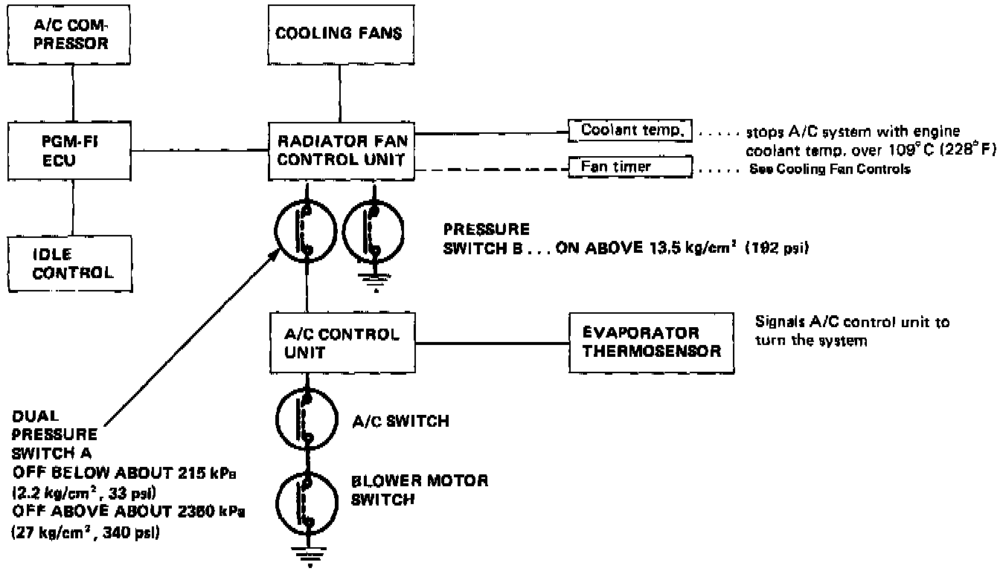
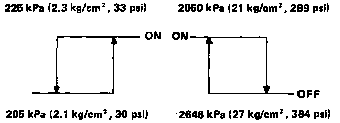

Air Conditioner

AIR CONDITIONER CONTROL SYSTEM
Air conditioner control system consists of the A/C switch in the function control panel, A/C control unit, evaporator, dual pressure switch, radiator fan control unit, engine coolant temperature sensor, pressure switch, PGM-FI ECU, magnetic clutch, and the clutch relay.
SYSTEM OPERATION
When the A/C switch and blower motor switch ON, the A/C control unit sends a signal through the dual pressure switch to the radiator fan control unit. If the evaporator sensor temperature is over 4°C (39°F), the radiator fan control unit activates the cooling fans and sends a signal to the PGM-FI ECU. The ECU then increases engine idle speed and energizes the A/C compressor clutch.
When the temperature at the evaporator drops below 3°C (370 F) the sensor signals the control unit to turn off the fans and compressor.
Dual Pressure Switch Operation:

PRESSURE SWITCHES AND FAN CONTROL
If the refrigerant pressure becomes too high (due to blockage) or too low (due to leakage) the dual pressure switch sends a signal to the cooling fan control unit to prevent the A/C from operating.
- When the system pressure is high (due to heavy operation in high temperature), pressure switch B is activated to run the cooling fans at a higher speed.
- If engine coolant temperature reaches 109°C (228°F) at the coolant temperature sensor, the A/C is shut off.